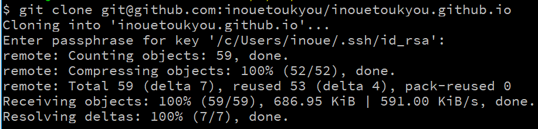
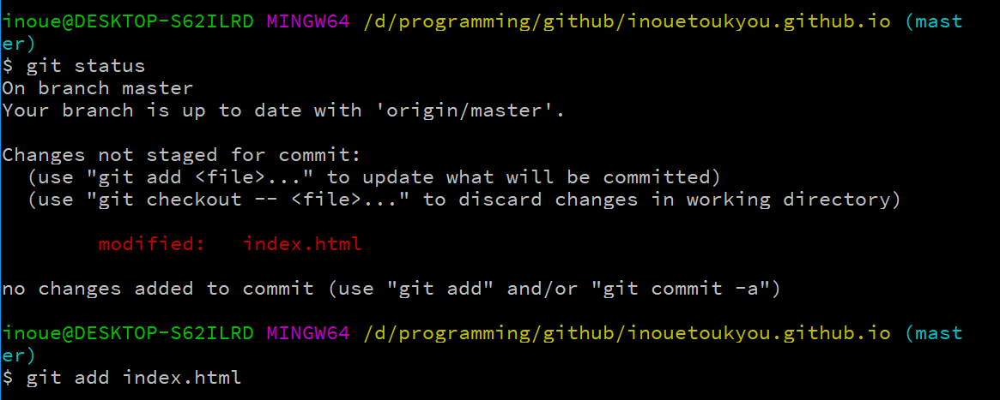
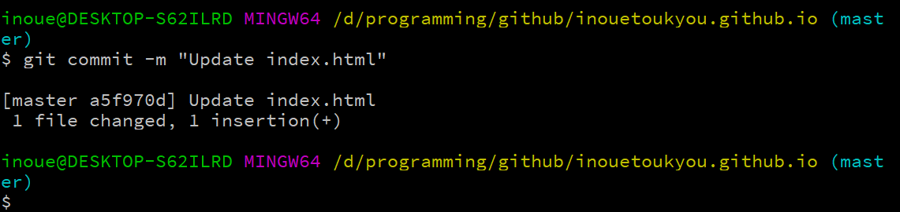
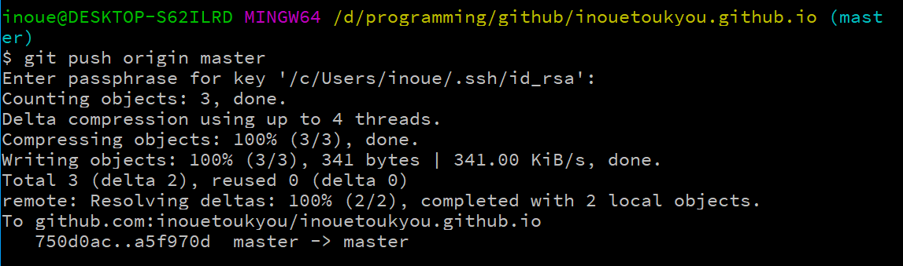

4.1 Clone Your Repository
Type command:
git clone git@github.com:inouetoukyou/inouetoukyou.github.io
prototype: git clone git@github.com:{your user name}/{your repository name}
cd inouetoukyou.github.io

4.2 Build Your Homepage
1) Modify index.html
Create a file "index.html", then you type command:
git status
See current status.
git add index.html
If you update many files (add, modify or delete), you can type:
git add - A
git commit -m "init index.html"
prototype: git commit -m "{Your commit}"
Note: {Your commit} is necessary
git push origin master
Note: you can type gitk to see your update logs.



2) Visit the homepage
3) More about git